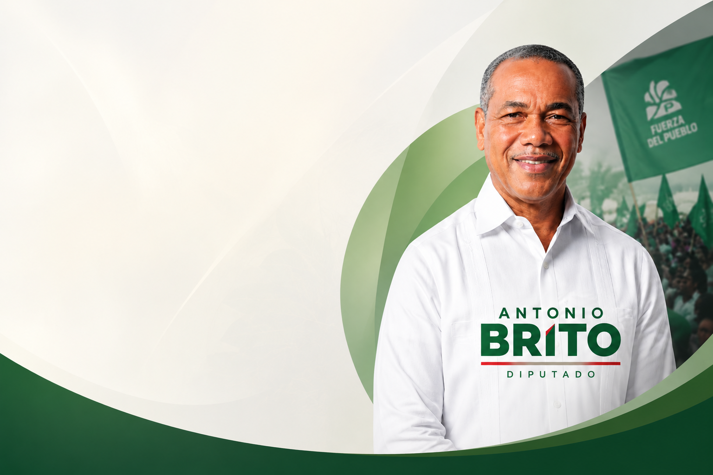
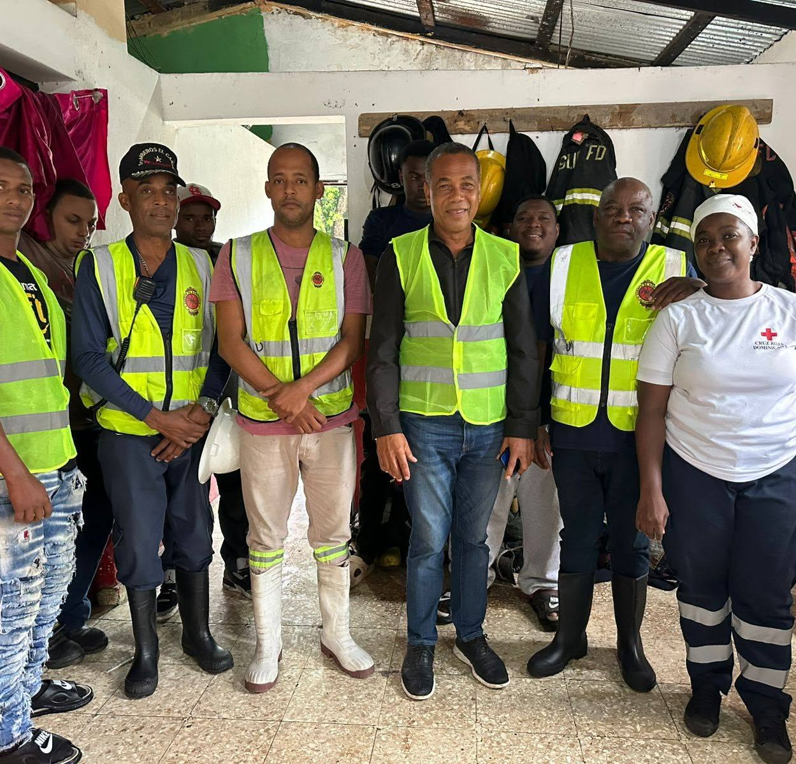
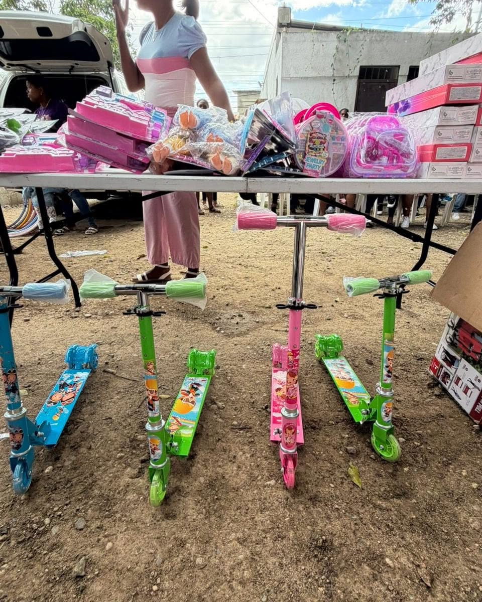
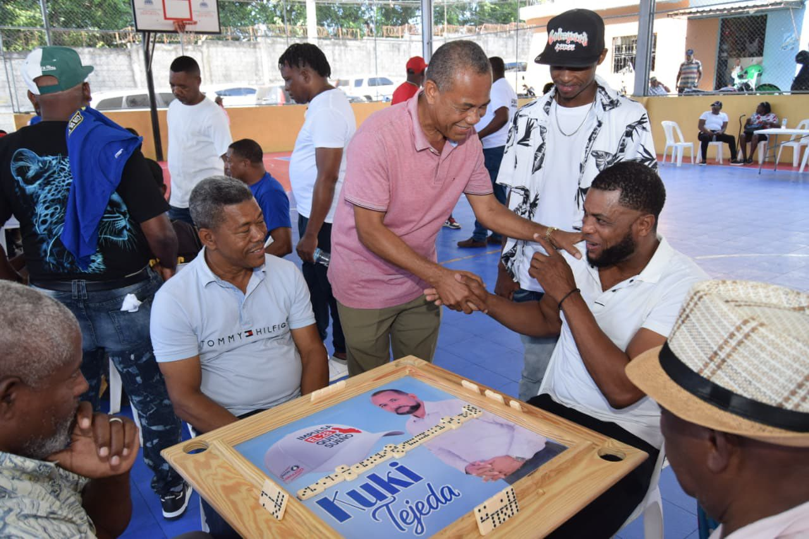
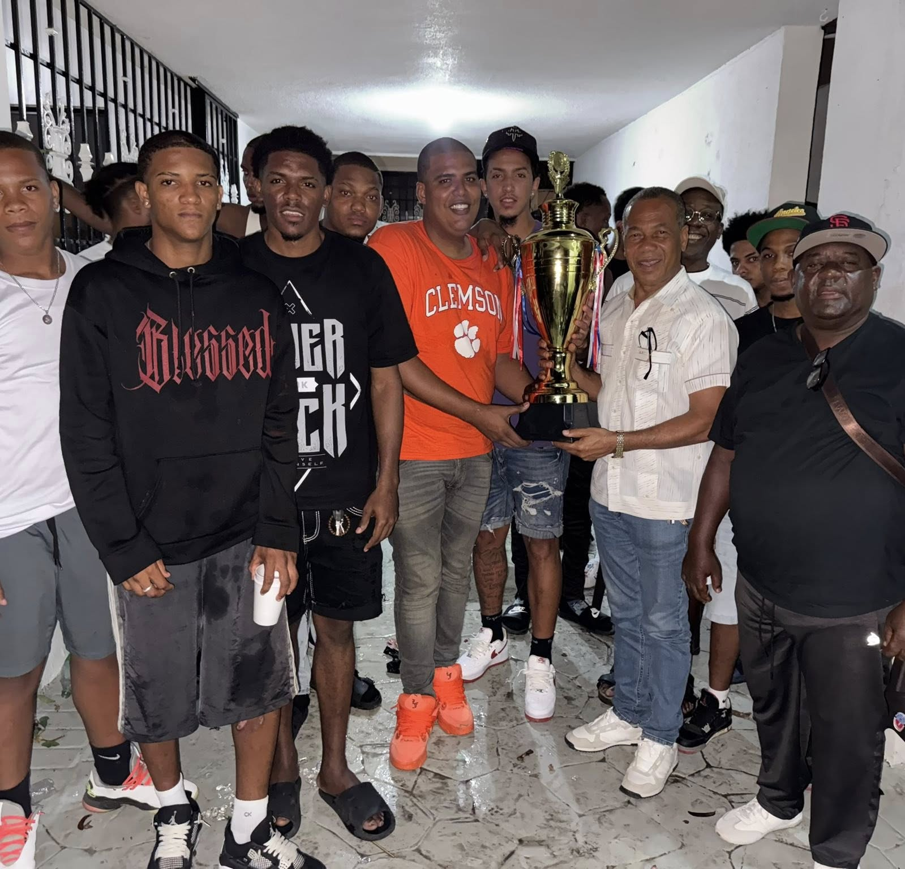
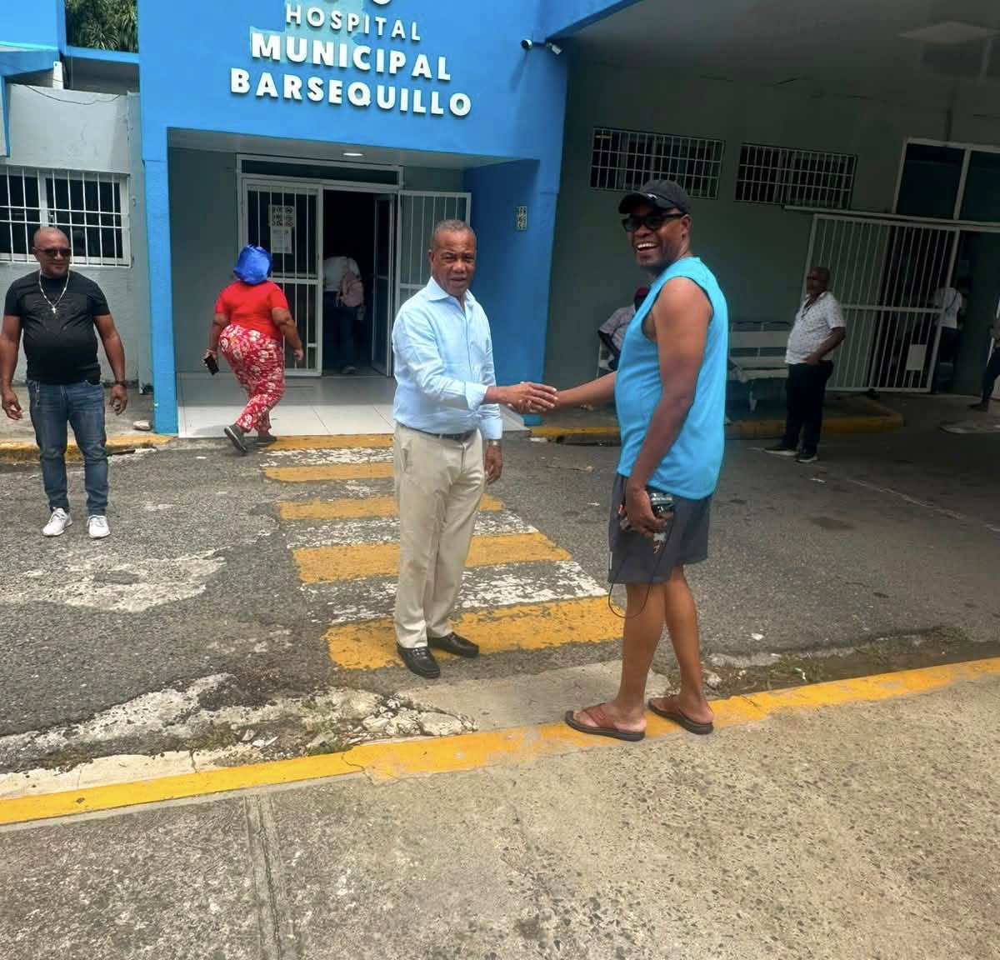

01 / COMUNIDAD
Demarcaciones de Haina
Gestión comunitaria directa con operativos de salud, apoyo a jóvenes deportistas y soluciones puntuales en infraestructuras locales.

Comprometido con Haina, con su gente y con construir oportunidades que se traduzcan en un mejor futuro para nuestras comunidades.
Trabajar por Haina no es un compromiso de campaña, es la vocación de toda mi vida.
Nacido y criado en el seno del sector transporte, Antonio Brito comprende desde la raíz las luchas y aspiraciones de la clase trabajadora de nuestra demarcación.
Como vicepresidente de FENATRANO y dirigente del Movimiento Rebelde, ha construido una trayectoria caracterizada por la defensa de los derechos comunitarios, la justicia social y el bienestar de Bajos de Haina.
Nace en Najayo, provincia San Cristóbal. Desde muy joven se vinculó al trabajo duro del sector transporte y al servicio social comunitario en la región sur.
Inicia una activa labor de apoyo comunitario en Bajos de Haina. Paralelamente asume roles de liderazgo en la Federación Nacional de Transporte La Nueva Opción (FENATRANO).
Electo Regidor del municipio a través del Movimiento Rebelde. Durante el período 2013-2014 asumió la presidencia de la Sala Capitular, impulsando normativas de fiscalización local.
Asume como el primer Director de la Junta Municipal de Quita Sueño y es reelecto en 2020. Su gestión se caracterizó por la canalización de cañadas y obras básicas de urbanización.
Electo Diputado por la Circunscripción 3 de San Cristóbal en alianza entre la Fuerza del Pueblo y el Movimiento Rebelde, representando con firmeza los intereses de Haina en el Congreso Nacional.
Iniciativas, resoluciones y supervisión activa en favor de Bajos de Haina, San Gregorio de Nigua, El Carril y Quita Sueño.
Resoluciones sometidas para el asfaltado, aceras y contenes en El Naranjal, El Cacique y Prado Real; la intervención urgente de la carretera principal Quita Sueño – Manoguayabo y la creación de un cruce peatonal y para motocicletas en la Av. Refinería.
Iniciativas orientadas a fortalecer los servicios esenciales y la infraestructura pública de nuestras comunidades.
 02
02
Iniciativas destinadas a fortalecer los espacios deportivos y preservar la identidad de nuestras comunidades.
 03
03
Intervenciones realizadas desde el Congreso para exigir respuestas, transparencia y seguimiento a las necesidades de nuestras comunidades.
 04
04
Un recorrido visual por el trabajo, la comunidad y los espacios donde se construye este compromiso con Haina.





Para conocer más sobre el trabajo de Antonio Brito, compartir una inquietud comunitaria o mantenerse en contacto con su labor, puedes utilizar los canales oficiales.